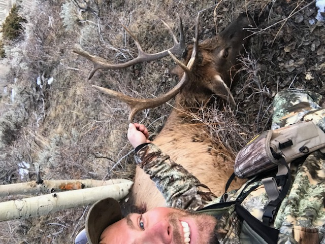

September Elk Tactics
Match your calling, movement, and setup to the phase of the rut.
HUNTING
A season of close calls, missed shots, blown stalks, and hard-earned lessons comes down to the final 20 minutes of a Utah elk hunt—and a lesson from Dad that proves true once again: never give up.

Thirty minutes of shooting light.
That was all that separated me from an unfilled Utah bull elk tag and the end of a long season.
Eighty-five yards away stood a five-point bull that had no idea we were there.
I raised my muzzleloader, settled the crosshairs on his front shoulder, and squeezed the trigger.
The bull disappeared behind a cloud of smoke.
For a second, I had no idea what had happened. I couldn't tell if I'd hit him, let alone made a good shot.
Then I looked over at my brother.
He was already celebrating.
“You got him! Put another one in him!”
What happened in those final minutes was the end of an elk season that had started months earlier. I'd hunted archery, rifle, and now muzzleloader. I'd been close. I'd missed. I'd watched opportunities disappear. I'd hunted hot weather, steep country, thick timber, and enough miles to make me question whether it was going to happen at all.
But there was one thing I hadn't done.
I hadn't given up.
Here in Utah, I was hunting what the state called a three-season elk tag—a general-season, over-the-counter resident bull tag that gave me the opportunity to hunt archery, rifle, and muzzleloader.
Archery season starts early, generally around the last part of August and runs into September. My brother and I both had tags that year.
Like most hunters, though, we didn't have unlimited time.
We hunted every weekend we could and snuck away for a few extra days when possible. But we had saved the final four days of archery season because we figured that would give us our best chance of finding elk that were getting more vocal.
Those four days were hot, and the hunting was tough.
By the last day, we were covering country and working ridge systems, dropping into different drainages and trying everything we could to get a bull to answer.
We made a big loop around one drainage and eventually worked our way to the opposite side.
Finally, a bull answered.
After days of grinding, hearing that bugle immediately changed everything.
We took off toward him.
Then, with about 125 yards left to close, the wind switched.
Just like that, the setup we'd worked for was falling apart.
Then another bull answered farther down the drainage.
We didn't waste any time.
We started running and gunning, trying to get into position on the second bull.
By the time we reached the ridge system at roughly the same elevation as him, that bull was fired up. He was mad, and he was coming fast.
Then he bugled again.
This time he was so close I couldn't understand how he hadn't already seen us.
I dropped to a knee behind a bushy pine tree in a sea of timber and started ranging the few openings where I might get a shot.
The first opening I ranged was 41 yards.
Then there he was.
A beautiful six-point bull, staring right through us.
I drew my bow as quickly as I could and froze at full draw.
It felt like I held that bow forever. In reality, it was probably only a couple of minutes, but anybody who's held a bow at full draw on a bull elk knows how long a couple of minutes can feel.
Finally, as slowly as I could, I turned my head slightly and gave a few faint cow calls with my mouth reed.
The bull exploded with a bugle.
At that distance, it felt like it was going to blow my eardrums out.
Seeing how much it fired him up, I did it again.
He started licking his lips and couldn't take it anymore.
He stepped forward.
Right into my shooting lane.
Forty-one yards.
After all that work, this was it.
I released the arrow.
And I hit the one measly little pine tree I hadn't accounted for.
The arrow deflected.
That beautiful six-point bull disappeared into the timber to live another day.
That was the end of my archery season. I never got another opportunity.
It hurt, but elk season wasn't over yet.
Next came Utah's general rifle hunt, which can be a madhouse.
My brother was able to connect on a nice bull opening morning, and we spent the next couple of days packing meat.
Then it was my turn to keep grinding.
For the next nine days I chased multiple bulls through some very unforgiving terrain. I could find elk, but I couldn't quite close the distance.
They always seemed to stay just beyond the range where I felt comfortable taking a shot.
On the second-to-last day of the rifle hunt, I finally found another opportunity.
There was a group of elk with a nice six-point bull. They hadn't been pressured. They were just doing what elk do.
That evening, my dad, brother, and I made a plan for the following morning. We figured out what we thought was the best route to get me onto a bench the elk had been using.
The next morning started with a hard climb.
My brother stayed several ridges behind me where he could glass while I worked toward the bench.
Just before I reached it, he called me on the radio.
The elk were out feeding.
I slowed everything down and started working forward, trying to keep the wind in my face while dealing with those unstable morning thermals.
I was almost to the point where I could see the elk when my brother called again.
Two other hunters had come over the next ridge.
They blew the elk out.
After all that planning and climbing, it was over in seconds.
I didn't know what else to do, so I turned around and started working my way into an adjacent drainage.
That's when another bull appeared out of nowhere.
He was by himself, feeding in a small pocket that I just happened to have the right angle to see.
Suddenly, I was back in the game.
I made a mad dash up the canyon, trying to parallel the bull and find a good shooting position across from him.
The country was steep enough that simply finding a solid rest was difficult.
When I finally got into position, the bull was right at the edge of my comfortable shooting distance.
I found a spot where I could get prone, ranged him, dialed my scope, tried to slow my breathing, and squeezed the trigger.
Clean miss.
Right over his back.
The bull looked around.
I settled in again and fired a second shot.
He took off.
That uneasy feeling hit me immediately.
Had I just blown another great opportunity?
My brother eventually joined me, and we spent the next several hours searching the area.
No blood.
No sign of a hit.
I'd missed.
As frustrating as it was, I'd rather know I'd missed clean than wound a bull and never recover him.
I figured that was probably my last opportunity of rifle season.
Next, I'd be hunting deer with my family for about ten days, which I always enjoy. Mule deer are fun, challenging animals to hunt.
But elk are different for me.
Elk are what make me tick.
And I still had one season left.
My final opportunity was Utah's general muzzleloader elk hunt.
I had five days to make it happen.
On the first day, I found a small herd with a spike and a four-point bull. I made a play and got within about 250 yards, but I couldn't close the final distance. They simply kept feeding away from me and eventually disappeared into thick timber.
I tried slipping into the timber after them, but conditions were terrible for it.
Dry.
Crunchy.
Loud.
The next day I relocated the elk, but the result was the same.
On day three, I couldn't find them at all.
I figured I'd finally stunk up enough of the mountain that they'd had enough of me.
Day four was almost completely uneventful. I saw a cow and calf, but that was about it.
Then came the final day.
My last chance.
I went back into the area where I'd been finding that small herd.
Somehow, they were almost exactly where they'd been before.
I tried making another play, but keeping up with feeding elk in rough country is difficult enough. Doing it while trying to beat all those eyes, ears, and an elk's incredible nose is something else entirely.
Since it was the last day, I decided to push into the timber and try to stalk them.
I made it to about 75 yards from a bedded cow before everything finally blew apart.
The herd took off.
I watched them disappear.
That felt like it.
Season over.
Tag unfilled.
I started heading off the mountain.
Then my brother made a suggestion.
There was one spot we hadn't hunted all year.
Why not give it one last try?
We went back to camp, ate an early lunch, and headed for that last drainage.
We climbed the ridge and eventually topped out at a glassing point.
Almost immediately, there they were.
A herd of elk standing in plain sight.
And there were multiple bulls.
There wasn't much time to think about it.
We quickly dropped into the canyon, climbed the other side, and started working toward them as fast as we could without blowing the whole thing up.
Daylight was disappearing.
When we crept around the final point of the ridge where we'd last seen them, I started picking out cows and calves feeding ahead of us.
The roll of the hill hid the rest of the herd.
I couldn't see a bull.
We kept creeping forward.
More cows.
More calves.
And then—
A bull.
I eased ahead just a little farther, trying to get into a shooting position.
Then one of the cows spotted us.
There was no more time.
I raised the muzzleloader.
The bull was 85 yards away.
I settled the crosshairs on his front shoulder and touched it off.
Smoke filled my view.
I couldn't see what happened.
My brother could.
He was already grinning from ear to ear.
“You got him! Put another one in him!”
I went straight into a reload.
Powder in.
Bullet down the barrel.
Ramrod out.
I drove the round home, tossed the ramrod on the ground, put a cap in the breech, closed it, pulled the hammer back, and found the bull again.
I settled the crosshairs on his front shoulder.
Squeezed.
Bull down.
Walking over to that bull is something I'll never forget.

I couldn't stop smiling.
After the missed opportunities during archery season, the long rifle hunt, the miles, the climbing, the blown stalks, the changing wind, the missed shots, and five more days carrying a muzzleloader around the mountains—it had finally happened.
And it happened with roughly 20 minutes of shooting light left on the final day of my elk season.
Months of hunting came down to a few final minutes.
We had just enough cell service to send a picture to our dad, who wasn't on the mountain with us, and make a phone call.
His response was simple.
“Heck yeah. Good job, boys.”
Then came the reminder.
“What have I always told you?”
I already knew the answer.
Never give up.
Thanks, Dad.
Keep Reading
Match your calling, movement, and setup to the phase of the rut.
Relocate elk when hunting pressure changes how the mountain behaves.
The essential pack, clothing, optics, kill-kit, and emergency gear.